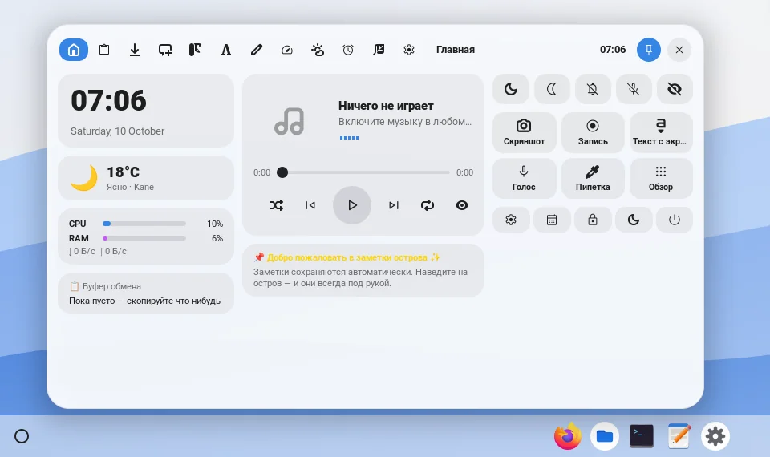
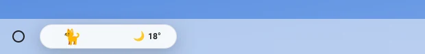
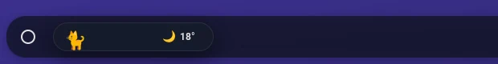

Хорошо работают
Менеджеры буфера обмена, мониторы системы, caffeine, погода, переключатели звука, помощники раскладки окон.
HypeDE работает на нетронутом GNOME Shell, поэтому умеет расширения. Некоторые идут вместе с HypeDE и подстраиваются под его тему; обычные расширения GNOME тоже работают.
Живёт на полке капсулой рядом с кнопкой лаунчера, как «Сейчас играет» на Chromebook. Показывает музыку, загрузки, таймеры и запись экрана; по щелчку раскрывается над полкой.



В сеансе HypeDE расширения GNOME выключены, чтобы набор, собранный для обычного GNOME, не сломал полку. Включите их в Настройки → Системные настройки → Службы GNOME → Расширения GNOME и ставьте через Extension Manager или с extensions.gnome.org.
Менеджеры буфера обмена, мониторы системы, caffeine, погода, переключатели звука, помощники раскладки окон.
Dash to Dock, Dash to Panel и другие, что заменяют верхнюю панель или док, — HypeDE уже переставляет эти части.
GNOME Shell 48–50, как и сам HypeDE.
Откройте issue в hypede/hypede со ссылкой на репозиторий. Нужна лицензия, совместимая с GPL, и GNOME Shell 48–50. Мы впишем расширение в полку и тему, как сделали с динамическим островом, и укажем вас здесь и в README.